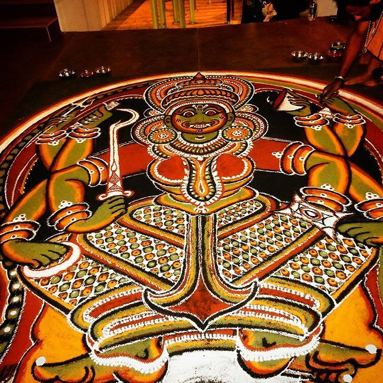

Names like Rangoli, Kolam etc are not new to us, and neither is the tradition of drawing them at the entrance of homes and temples. In fact it is part of the domestic routine in Hindu households, who consider it auspicious to draw certain patterns at the doorstep and courtyard to welcome a deity into the house. This art form is a harmonious blend of Aryan, Dravidian and Tribal traditions.
Kalam (Kalamezhuthu) is unique form of this art found in Kerala. It is essentially a ritualistic art practiced in temples and sacred groves of Kerala where the representation of deities like Kali and Lord Ayyappa, are made on the floor. Various factors need to be considered when deciding the nature or figure on the 'Kalam', which include the presiding deity of the temple or sacred grove, the religious purpose that calls for the ritual of Kalamezhuthu and the particular caste that does it. In each case the patterns, minute details, dimensions and colour choice are decided in observance with strict rules. The patterns vary considerably depending on the occasion, but rarely by the choice of the artist.
Kalamezhuthu is practiced using natural pigments and powders, usually in five colours. The drawing is done with bare hands without the use of tools. The pictures are developed from the centre, growing outwards, patch by patch. The powder is spread in the floor, letting it in a thin stream between the thumb and the index finger. The figures drawn usually have an expression of anger or other emotions. The powders and pigments are all extracted from plants - rice powder for white, burnt husk for black, turmeric for yellow, a mixture of lime and turmeric for red and the leaves of certain trees for green. Lighted oil lamps placed at strategic positions brighten the colours. Kalamezhuthu artists are generally members of communities like the Kurups, Theyyampadi Nambiars, Theeyadi Nambiars and Theeyadi Unnis. The 'Kalams' drawn by these people vary in certain characteristics.
Ritual songs accompanied by a number of instruments (namely ilathalam, veekkan chenda, kuzhal, kombu and chenda) are sung in worship of the deity, on completion of the 'Kalam'. These songs form part of an oral tradition; the rituals being performed by the artists themselves. The type of song varies considerably, from folk to classical depending on the deity being worshipped. The drawing of a 'Kalam' is started at an appointed time and it is erased immediately after the rituals related to it are over.
